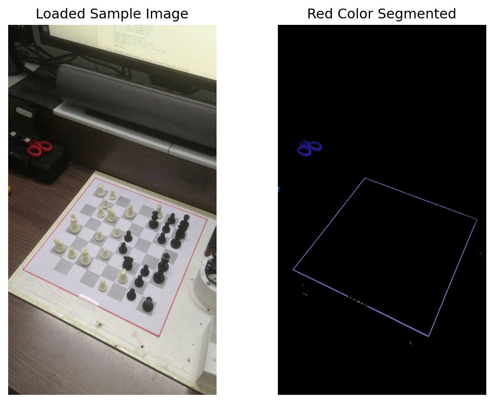

Applying Color Filtering to Image to isolate Red color
To segment the chess board from the environment, I am using a trick by coloring the boundaries of my chessboard as you can see in the below image.
Code
import matplotlib.pyplot as pltimport cv2import urllibimport numpy as npimage = cv2.imread('data/frame_3.jpg')image_rgb = cv2.cvtColor(image, cv2.COLOR_BGR2RGB)# convert to LAB color spacelab = cv2.cvtColor(image, cv2.COLOR_BGR2LAB)# Perform Otsu threshold on the A-channel th = cv2.threshold(lab[:,:,1], 127, 255, cv2.THRESH_BINARY + cv2.THRESH_OTSU)[1]result = cv2.bitwise_and(image, image, mask=th)# Display the image using Matplotlibfig, ax = plt.subplots(nrows=1, ncols=2)ax[0].set_title('Loaded Sample Image')ax[0].imshow(image_rgb)ax[0].axis('off')ax[1].set_title('Red Color Segmented')ax[1].imshow(result)ax[1].axis('off')plt.tight_layout()plt.axis('off')# Display the plotplt.show()

The first step in the segmentation algorithm is to use the red boundary and isolate it from the full image.
This code snippet demonstrates how to perform color-based segmentation using the LAB color space and Otsu thresholding. Here’s a breakdown of the code:
Convert to LAB Color Space:
lab = cv2.cvtColor(image, cv2.COLOR_BGR2LAB): Converts the original image from the default BGR color space to the LAB color space. The LAB color space consists of three channels: L (Lightness), A (green-magenta component), and B (blue-yellow component). This conversion is performed using the cvtColor function from OpenCV.
Perform Otsu Thresholding on the A-channel:
th = cv2.threshold(lab[:,:,1], 127, 255, cv2.THRESH_BINARY + cv2.THRESH_OTSU)[1]: Extracts the A-channel (green-magenta component) from the LAB image and applies Otsu’s thresholding technique to segment the image into foreground and background regions. Otsu’s thresholding automatically calculates the optimal threshold value based on the image histogram. The resulting binary threshold image is stored in the variable th.
Apply the Mask:
image = cv2.bitwise_and(image, image, mask=th): Applies the binary threshold mask to the original image using the bitwise_and function from OpenCV. This operation retains only the pixels in the original image that correspond to the foreground regions identified by the threshold mask. The mask argument specifies the binary mask to be applied.
After executing this code, the image variable will hold the processed image, where only the foreground regions, determined by Otsu’s thresholding on the A-channel, are visible, and the background is set to black.
Identifying all the lines in the image using Classic straight-line Hough transform
The Hough transform is a simple algorithm commonly used in computer vision to detect lines and shapes in an image. It provides a robust method to identify geometric patterns by representing them in a parameter space known as the Hough space. The algorithm works by converting image space coordinates to parameter space, where each point in the parameter space corresponds to a possible line or shape in the image. By accumulating votes for different parameter combinations, the Hough transform identifies the most prominent lines or shapes based on the peaks in the parameter space. This approach is particularly useful for line detection, as it can handle various types of lines, including straight lines, curves, and even partially occluded or broken lines.
Code
from skimage.transform import hough_line, hough_line_peaksfrom skimage.color import rgb2grayimport matplotlib.pyplot as pltimport numpy as npimage_gray = rgb2gray(image_rgb)# Classic straight-line Hough transform# Set a precision of 0.5 degree.tested_angles = np.linspace(-np.pi /2, np.pi /2, 360, endpoint=False)h, theta, d = hough_line(rgb2gray(result), theta=tested_angles)plt.figure(figsize=(20,10))plt.imshow(image_gray, cmap='gray')for _, angle, dist inzip(*hough_line_peaks(h, theta, d)): (x0, y0) = dist * np.array([np.cos(angle), np.sin(angle)]) plt.axline((x0, y0), slope=np.tan(angle + np.pi/2))plt.title('Detected lines')plt.axis('off')plt.tight_layout()plt.show()
Here is the explanation of the key part of code which does line detection using the Hough transform:
In this line, the np.linspace() function generates an array of 360 equally spaced angles between -np.pi / 2 and np.pi / 2. These angles represent the range of lines to be tested during the Hough transform. The endpoint=False argument ensures that the endpoint is not included in the generated array.
Performing the Hough transform
h, theta, d = hough_line(rgb2gray(result), theta=tested_angles)
Here, the hough_line() function is applied to the grayscale version of the result image using rgb2gray() to convert it. The theta parameter is set to the tested_angles array, which specifies the angles to consider during the transform. The resulting Hough accumulator array h, along with the theta angles theta and distances d, are stored.
This loop iterates through the peaks detected in the Hough transform using the hough_line_peaks() function. For each peak, the angle and dist values represent the orientation and distance from the origin to a line in the image. The (x0, y0) coordinates are calculated by multiplying the distance with the [np.cos(angle), np.sin(angle)] vector, which determines the line’s position. Finally, plt.axline() is used to draw a line on the plot using the calculated (x0, y0) coordinates and the tangent of the angle plus np.pi/2.
By running this code, you will perform the Hough transform to detect lines in an image. The resulting lines will be visualized on a plot using plt.axline(). This code segment is useful for line detection applications and helps to understand the concept of identifying lines in an image using the Hough transform.
Find all points of intersections of the lines
To extract the end points of the chess board, we need to find the intersection of the Hough lines.
But as you can see, there are simply too many points due to too many intersecting lines. We are mainly intereseted in just 4 points which represent the 4 corners of the chess board. We can use KMeans algorithm with a cluster size of 4 to group the close together points. The K-means clustering algorithm is commonly used for unsupervised learning tasks to group similar data points together. It is an iterative algorithm that aims to minimize the within-cluster variance by adjusting the cluster centroids until convergence.
Code
from sklearn.cluster import KMeanskmeans = KMeans(n_clusters=4, random_state=0, n_init="auto").fit(intersection_points)plt.figure(figsize=(20,10))plt.imshow(image_gray, cmap='gray')plt.scatter(kmeans.cluster_centers_[:, 0], kmeans.cluster_centers_[:, 1], color='r')plt.title('Detected points of intersections')plt.axis('off')plt.tight_layout()plt.show()
Here, the KMeans class is instantiated with the following parameters: - n_clusters=4: Specifies the number of clusters to form. In this case, we want to create four clusters. - random_state=0: Sets the random seed for reproducibility. By setting a specific random state value, the clustering results will be the same each time the code is run with the same data. - n_init="auto": Determines the number of times the K-means algorithm will be run with different centroid seeds. “auto” automatically selects a value based on the number of data points.
The fit() method is then called on the KMeans object, with intersection_points as the input data. This fits the K-means model to the data, performing the clustering and assigning each data point to one of the four clusters.
The result of running the fit() method is stored in the kmeans variable. This object contains information about the fitted K-means model, including the cluster assignments for each data point.
By examining the kmeans object, you can access various properties and methods, such as kmeans.labels_ to retrieve the assigned cluster labels for each data point or kmeans.cluster_centers_ to obtain the centroid coordinates of each cluster.
Connect the 4 points into a polygon
We use the standard convexHull algorithm to sort the 4 points in the order in which one can connect them into a polygon. Convex hull is a concept in computational geometry that represents the smallest convex polygon that encloses a given set of points in a plane.
Code
from scipy.spatial import ConvexHullpoints = kmeans.cluster_centers_hull = ConvexHull(points)plt.figure(figsize=(20,10))plt.imshow(image_gray, cmap='gray')plt.plot(points[:,0], points[:,1], 'o', color='r')for simplex in hull.simplices: plt.plot(points[simplex, 0], points[simplex, 1], color='r')plt.axis('off')plt.tight_layout()plt.show()
Remove the rest of the environment
Its a simple crop based on the polygon I generated from Convexhull calculation
Code
from skimage import drawpoints = kmeans.cluster_centers_polygon_points = []for k in hull.vertices: polygon_points.append(points[k])polygon_points = np.array(polygon_points)print(polygon_points)# Create a mask of the polygon regionmask = np.zeros(image_rgb.shape[:2], dtype=np.uint8)rr, cc = draw.polygon(polygon_points[:, 1], polygon_points[:, 0])mask[rr, cc] =1# Apply the mask to the input imagecropped_image = image_rgb.copy()cropped_image[mask ==0] =0plt.figure(figsize=(20,10))plt.imshow(cropped_image)plt.axis('off')plt.tight_layout()plt.show()
Projective transform, also known as perspective transform or homography, is a fundamental concept in image processing and computer vision. It is a geometric transformation used to map points from one plane (2D space) to another plane (also 2D space) in a way that preserves straight lines. This transformation is particularly useful when dealing with images captured from different viewpoints or with varying camera angles.
In simpler terms, projective transform allows us to correct the perspective distortion in an image by transforming it into a new view as if it was captured from a different angle or position.
The projective transform is represented by a 3x3 matrix known as the homography matrix. This matrix is determined by a set of corresponding points between two images or scenes. Typically, at least four pairs of corresponding points are needed to calculate the homography matrix.
Let’s assume we have two sets of corresponding points:
The goal is to find a 3x3 matrix H such that, when we apply the projective transform to each point (x, y) in the source image, it will be mapped to a new point (x’, y’) in the destination image:
Once the homography matrix H is calculated, we can use it to warp the source image onto the destination image, or vice versa, to align or overlay them correctly.
Applications of projective transform in image processing include:
Image stitching: To combine multiple images taken from different perspectives to create a panoramic image.
Augmented reality: To superimpose virtual objects onto real-world scenes by aligning them correctly.
Image rectification: To remove perspective distortion, making objects appear in a plane-parallel view.
Camera calibration: To estimate camera parameters and correct image distortions in computer vision tasks.
It’s important to note that the projective transform assumes a pinhole camera model, which is a simplified model of real-world cameras that neglects certain optical distortions. For more accurate transformations, more complex camera models can be used, such as the radial distortion model in camera calibration.
Let’s break down what the core part of the code does:
src = np.array([[0, 0], [0, w], [h, w], [h, 0]]): This line creates a NumPy array src containing four 2D points. These points represent the coordinates of a rectangular region in the source image that you want to transform. The points are given in (row, column) format, and they define a rectangular region with corners at (0,0), (0,w), (h,w), and (h,0). The w and h variables likely represent the width and height of the source image, respectively.
dst = np.array([polygon_points[0], polygon_points[2], polygon_points[3], polygon_points[1]]): This line creates another NumPy array dst containing four 2D points. These points are the corresponding destination coordinates where you want the points from src to be mapped after the transformation. The polygon_points array likely contains four 2D points representing the desired corners of the transformed region.
tform3 = transform.ProjectiveTransform(): This line creates an instance of the ProjectiveTransform class from the scikit-image library. This class represents a projective transformation (perspective transform) that can be used to transform points or images.
tform3.estimate(src, dst): This line estimates the projective transformation based on the corresponding points defined in src and dst. It calculates the 3x3 homography matrix that maps the points in src to the points in dst, effectively determining the transformation required to warp the rectangular region defined by src to the desired shape represented by dst.
warped = transform.warp(cropped_image, tform3, output_shape=(w, h)): This line applies the estimated projective transformation to the cropped_image. The warp function from scikit-image is used for this purpose. The cropped_image is the source image from which you previously extracted the region defined by src. The output_shape=(w, h) argument specifies the dimensions of the output (warped) image, which should be the same as the dimensions of the original region defined by src. The tform3 transformation is applied to the cropped_image, resulting in the warped image.
After this code executes, the warped image will be a transformed version of the original cropped_image, where the rectangular region defined by src is now warped to match the desired shape represented by the corresponding points in dst.